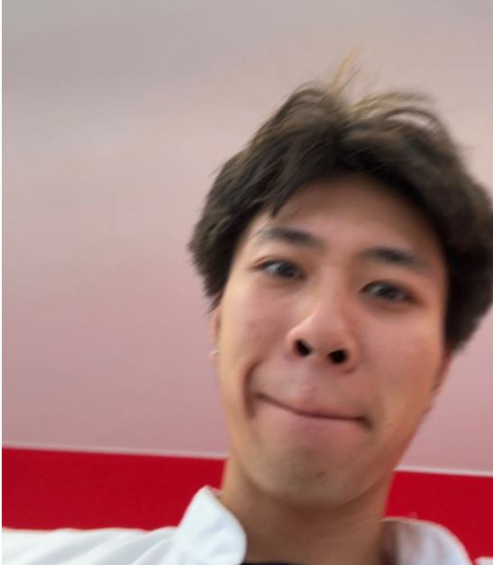
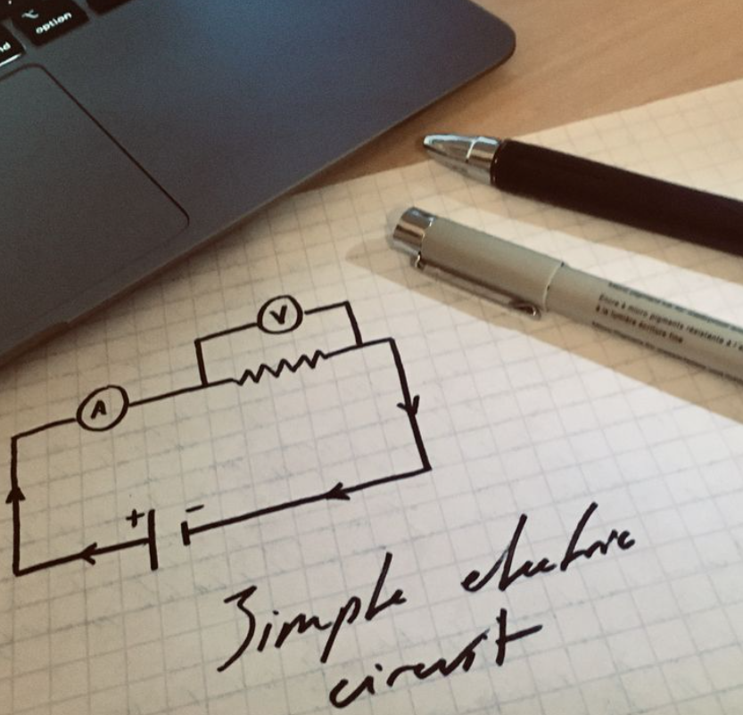

01 / Embedded systems
Noise Sensor System
An environmental noise-monitoring system developed during my internship at Nightingale. My work brought together microcontrollers, MEMS microphones, prototyping, and an internal dashboard.
Computer Engineering / Hardware & Software
From sensors and code to designs in Fusion 360.
I enjoy turning ideas into things that work.
01 / About me
I'm Jason, a Computer Engineering student at Rotterdam University of Applied Sciences. My discipline sits between computer science and electrical engineering.
I'm drawn to hardware, but it's where hardware and software meet that I feel most at home: embedded systems, robotics, and sensors talking to code.
I also enjoy designing parts in Fusion 360 and exploring how a digital design can become a physical object.
I grew up in the Netherlands, have Vietnamese roots, and am currently studying abroad at Taipei Tech in Taiwan.

Curious mind. Hands-on approach.
02 / Outside the classroom

Travel / Football / Weightlifting
I enjoy discovering new places and experiencing different cultures. Studying abroad gives me the opportunity to explore somewhere new while continuing my education.
Away from my laptop, I like playing football. It's a chance to stay active and enjoy a game with other people.
I also enjoy going to the gym and lifting weights. Training gives me something different to focus on outside studying and engineering.
03 / Food & favorites
From a comforting bowl of pho to a bowl of sugary cereal, these are some of my favorites.
| Food | Why I like it | Rating |
|---|---|---|
| Pho | A comforting dish that reminds me of home. | 10/10 |
| Beef stroganoff | I especially enjoy cooking it myself. | 9/10 |
| Kapsalon | A Dutch favorite I miss while living in Taiwan. | 9/10 |
| Lucky Charms | My favorite cereal. I have a sweet tooth! | 10/10 |
| Other sugary cereals | I'm happy with almost any sweet cereal. | 8/10 |
| Comfort food and sugary cereal are always welcome. | ||
There are a couple of things I would rather leave off my plate.
| Preference | Food | My thoughts |
|---|---|---|
| Not for me | Olives | Simply not something I enjoy eating. |
| Strong-smelling fish | Fish with a very fishy smell puts me off. |
04 / My work
A few projects that bring together hardware, software, and practical problem solving.
01 / Embedded systems
An environmental noise-monitoring system developed during my internship at Nightingale. My work brought together microcontrollers, MEMS microphones, prototyping, and an internal dashboard.
02 / Robotics
A remotely operated vehicle designed to give people with mobility impairments a sense of virtual mobility. I worked on sensor integration, live video, remote control, and obstacle avoidance.
03 / Computer vision
A physical counting system that combines a mechanism for separating and positioning needles with camera-based counting.